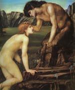

Пан ("сподобався всім"), в грецькій міфології божество стад, лісів і полів, син вісника богів Гермеса й німфи Дриопа. Цей покровитель гірських лісів і пасовищ, кіз і овець був козлоногих і рогатий. Дриопа жахнулася, побачивши свого новонародженого сина, зарослого волоссям і бородатого.
Однак Гермес і боги-олімпійці лише розсміялися і нарекли немовляти Паном. Разом з сатирами і силенами, демонами стихійних плодоносних сил землі, Пан входив в свиту Діоніса. Грайливий і життєрадісний, він був відомий своєю пристрастю до вина і веселощів, палкої закоханістю і переслідуванням німф. Одна з них, Сиринга, в страху перед козлоногим богом перетворилася в очерет, з якого Пан зробив сопілку.
Неодмінний суддя пастуших музичних змагань, він викликав на змагання Аполлона і, на думку судді, царя Мідаса, переміг його. В помсту бог нагородив суддю ослячими вухами. Як божество стихійних сил природи, звуком своєї сопілки Пан наводив на людей безпричинний, так званий панічний страх, особливо в спекотний літній полудень, коли завмирали лісу і поля.
Пан допомагав в битвах, наводячи жах на ворогів; він допоміг Зевсу в боротьбі з титанами. Культ Пана був особливо поширений в Аркадії, саме там розташована священна гора, названа його ім'ям. У римській міфології Пану відповідають Фавн і Сильван.